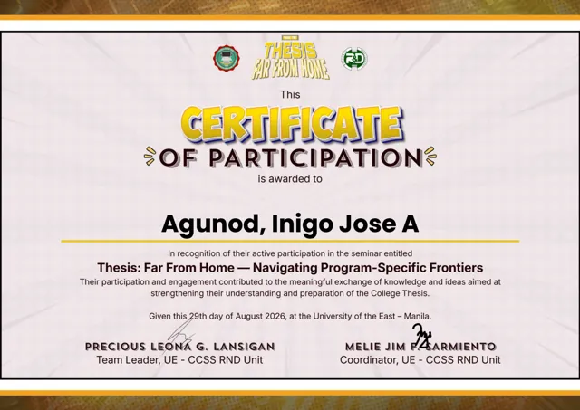
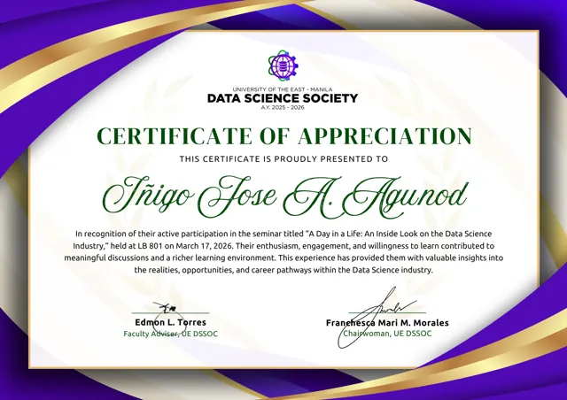
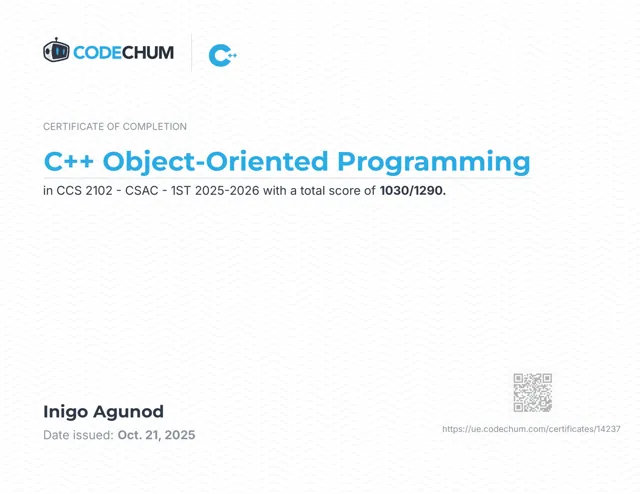

Linux & servers
Daily exploration with CachyOS, the terminal, and system configuration.
IÑIGO JOSE AGUNOD / PERSONAL PORTFOLIO
BASED IN THE PHILIPPINESI’m Iñigo, a computer science student drawn to Linux, servers, and the systems behind the screen.
Explore my work01 / THE PERSON BEHIND THE TERMINAL
Especially the parts you don’t see.
I’m a third-year college student working toward a future in cloud engineering and DevOps. I enjoy setting up Linux environments, exploring AWS, and understanding how infrastructure fits together.
My approach is simple: build it, understand it, then learn how to automate it. I’m developing those foundations through hands-on practice and collaborative school projects.
Working toward Cloud / DevOps OJT in 2027Daily exploration with CachyOS, the terminal, and system configuration.
Learning AWS through EC2, SSH access, and networking fundamentals.
Using Git and GitHub to collaborate, track changes, and improve projects.
02 / A FEW THINGS I’M WORKING ON
Learning programming through play
01 explore the world
02 discover a topic
03 solve a challenge
04 unlock what’s next _
A collaborative educational game combining exploration with programming challenges. My work has included progress tracking, topic guidance, assessments, and inventory interactions.
PYTHON / GAME SYSTEMS / GIT
Explore repository ↗A more trustworthy endpoint activity trail
Our proposed thesis system explores tamper-evident endpoint activity monitoring for educational computer laboratories, with a central dashboard for incident review.
The planned design combines event collection, HMAC-linked records, and assessment of potentially malicious executables. The project is in its proposal and prototype stage.
From local terminal to a remote server
01 explore cloud networking
02 configure a Linux server
Connected. Keep learning.
Practicing EC2 access, SSH keys, and security group configuration while building a stronger understanding of cloud infrastructure.
This is an ongoing learning track toward a more complete cloud and DevOps portfolio.
03 / ALWAYS A STUDENT
Seminars attended, lessons completed,
and a little progress along the way.
Participation, appreciation, and course completion certificates from my learning journey.

View certificate ↗Navigating Program-Specific Frontiers
UE–CCSS RND Unit

View certificate ↗An Inside Look on the Data Science Industry
UE Manila · Data Science Society

View certificate ↗CCS 2102 · CodeChum
Portfolio Building 101
CCSS Student Council
04 / WHAT’S NEXT?
Have a project, an opportunity, or something
interesting to share? Let’s get in touch.